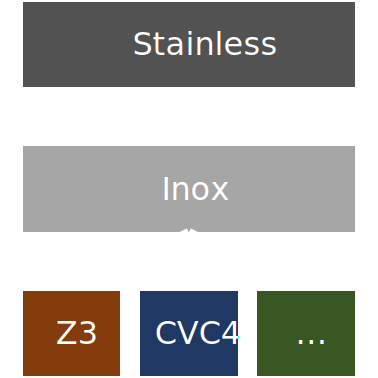

Solal Pirelli, Matt Bovel
December 17, 2021
def f(n: Int): Unit = {
assert(n * n > 10)
}Found counter-example:
n: Int -> -1743011841sealed abstract class Thing {
def size: Int = this match {
case Big(a, b, c) => a + b + c
case Small() => 0
case Medium(a) => a
}
}
case class Big(a: Int, b: Int, c: Int) extends Thing
case class Small() extends Thing
case class Medium(a: Int) extends Thing
def g(t: Thing): Unit = {
assert(t.size > 10)
}Solver can choose any SAT assignment
Counter-examples could be arbitrarily large
Minimal counter-example
e.g. x > 0 \rightarrow 1, not 100
“On SAT Modulo Theories and Optimization Problems”
Robert Nieuwenhuis and Albert Oliveras, 2006
\begin{array}{lll} \textsf{UnitPropagate: } & & \\ M \mathbin{||} F, C \lor l &\Longrightarrow M \, l \mathbin{||} F, C \lor l &\textnormal{ if} \begin{cases} M \models \lnot C \\ l \textnormal{ is undefined in } M. \end{cases} \\ \textsf{Decide: } & & \\ M \mathbin{||} F &\Longrightarrow M \, l^d \mathbin{||} F &\textnormal{ if} \begin{cases} l \textnormal{ or } \lnot l \textnormal{ occurs in a clause of } F \\ l \textnormal{ is undefined in } M. \end{cases} \\ \textsf{Backtrack: } & & \\ M \, l^d \, N \mathbin{||} F, C &\Longrightarrow M \, \lnot l \mathbin{||} F, C &\textnormal{ if} \begin{cases} M \, l^d \, N \models \lnot C \\ N \textnormal{ contains no decision literals}. \end{cases} \\ \end{array}
Given
F = (\lnot x \lor y) \land (\lnot x \lor \lnot y) \land (\lnot x \lor y)
we have the following derivation:
\begin{array}{lrl} &\emptyset&\Longrightarrow \textnormal{(Decide)} \\ & x^d &\Longrightarrow \textnormal{(UnitPropagate)} \\ & \lnot y \; x^d &\Longrightarrow \textnormal{(Backtrack)} \\ & \lnot x &\Longrightarrow \textnormal{(UnitPropagate)} \\ & y \; \lnot x &\Longrightarrow \textnormal{(SUCCESS)} \\ \end{array}
\begin{array}{lll} \textsf{Theory Learn: } & & \\ T \mathbin{||} M \mathbin{||} F &\Longrightarrow T \mathbin{||} M \mathbin{||} F, C &\textnormal{ if} \begin{cases} \textnormal{ each atom of } C \textnormal{ is in } F \textnormal{ or in } M \\ F \models_T C. \end{cases} \\ \textsf{Theory forget: } & & \\ T \mathbin{||} M \mathbin{||} F, C &\Longrightarrow T \mathbin{||} M \mathbin{||} F &\textnormal{ if} \begin{cases} F \models_T C. \end{cases} \\ & & \\ \textsf{Theory Propagate: } & & \\ T \mathbin{||} M \mathbin{||} F &\Longrightarrow T \mathbin{||} M \, l' \mathbin{||} F &\textnormal{ if} \begin{cases} M \models_T l \\ l' \textnormal{ or } \lnot l' \textnormal{ occurs in } F \\ l \textnormal{ is undefined in } M. \end{cases} \\ \end{array}
\begin{array}{lll} \textsf{Theory Strenghten: } & & \\ T \mathbin{||} M \mathbin{||} F &\Longrightarrow T \land T' \mathbin{||} M \mathbin{||} F & \\ \end{array}
= Max + SMT
“Find an assignment that maximizes X satisfying F(X)”
List of (weight, constraint) tuples
Maximize sum of satisfied constraint weights
Maximize / minimize operations
Already implemented in Z3

New solver type in Inox, Stainless’s backend
No new code in Stainless needed